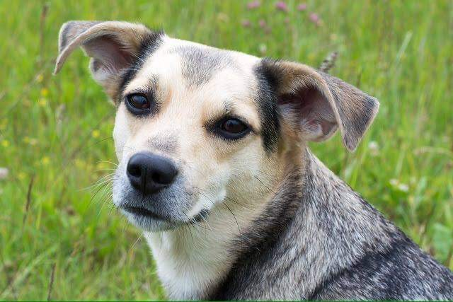
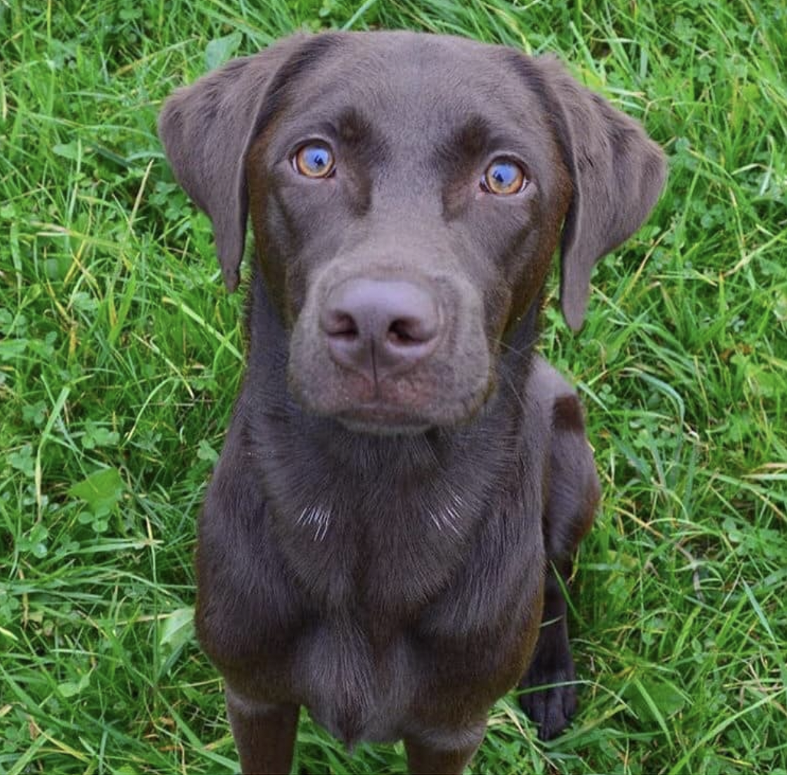
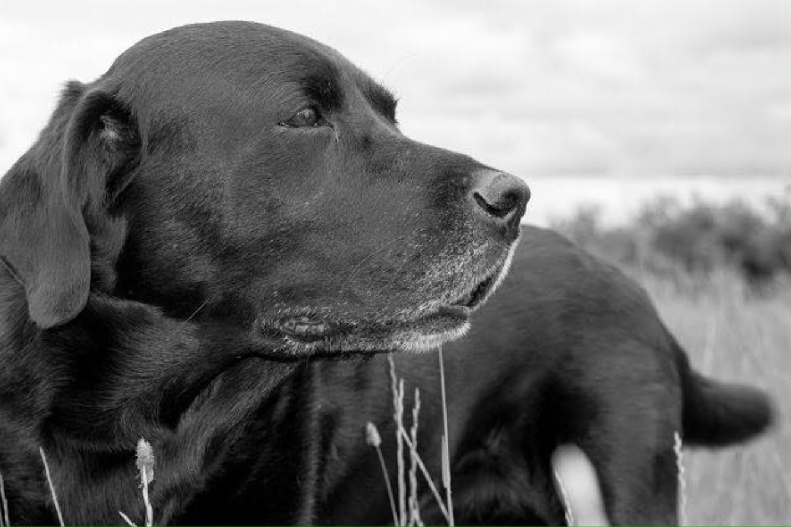

Om os (Natasha & hundene)

Mit navn er Natasha Lauritzen.
Min store kærlighed for hunde stammer helt tilbage fra barnsben og blev kun stærkere efter jeg fik arbejde som internats medarbejder.
I mine 4 år på internatet fik jeg en stor viden og forståelse omkring forskellige hundetyper, temperamenter, racer og tog ofte hvalpe i pleje, som ikke altid havde fået den mest optimale start på livet.
Jeg ønskede dog at dygtiggøre mig endnu mere og tilmeldte mig derfor instruktør for familiehunde uddannelsen hos Irene Jarnved, som jeg afsluttede i 2021.
Jeg selv er vokset op med labradors, som har været brugt på jagt. Det er her min store interesse for jagthunde er opstået, da jeg nyder at se hundene arbejde og bruge de gener og evner som de er født med. Det er også grunden til at jeg pt. Er i gang med og videre uddanne mig til jagtinstruktør.
Når jeg ikke nørder hund eller står på træningspladsen, arbejder jeg som dyrepasser.

Tyson er min rundkørsel på 10 år.
Han er en lille hund, med en stor stemme som altid smiler til en om morgenen og putter i sengen om aften.
Tyson var min træningsmakker på instruktøruddannelsen og fungere ellers som familiehund, læremester og fotomodel.
Da det ikke er til at sige hvilke racer der ligger gemt i Tyson er han utrolig sjov og lærerig at arbejde med, da det aldrig er helt til at forudse hvilke genetiske styrker eller svagheder som udspiller sig.

Arki er en labrador, som jeg i sin tid tog med mig hjem fra internatet. Han blev indleveret da han var omkring 6 uger gammel, sammen med sin mor, søskende og 20 andre labradors, som var blevet fjernet grundet vanrøgt.
Trods den hårde start på livet er Arki en af de mest kærlige og tillidsfulde hunde jeg har mødt. Han agerer fuldstændig som en lalleglad hundehvalp, trods han snart runder 6 år.
Og når nu man (i sit ejet hoved) kun er en forvokset baby, kan det der med koncentrationen under træning godt være lidt svært. Dybt inde er han dog en lab og vil derfor gøre meget for en kiks.
